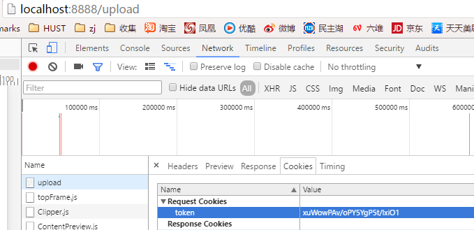
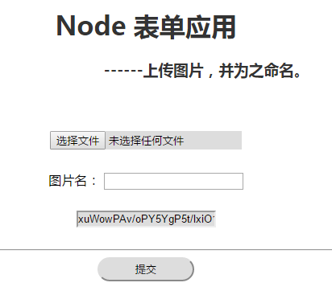

一、CSRF攻击
CSRF（Cross-Site Request Forgery）是指跨站请求伪造。通常使用cookie或者sessionID来标识用户的网站中，如果不加防范，攻击者只需要自己的域名下构造一个目标网站相同的表单就可以向服务器提交数据，因为：
在attack.com中构造的表单向target.com提交数据的过程中，浏览器会自动将target.com的cookie附加到请求中，尽管这个请求是来自attack.com的，服务器是不会自动进行判别的。
我自己编写了一个简单的html页面，包含提交数据的表单，其结构如下：1
2
3
4
5
6
7
8<form action="http://localhost:8888/upload" enctype="multipart/form-data" method="post">
<input type="file" name="pic" accept="image/*">
<lable>图片名： </lable>
<input type="text" name="pic_name" class="pic_name">
<input type="text" name="token" class="pic_file" id="token_input">
<hr>
<input type="submit" class="submit">
</form>
这个表单只包含三个input，pic用于上传图片文件，pic_name用于填写图片名字，token就是抵御CSRF攻击的随机令牌。接下来把这个html复制一个副本，打开本地服务器，访问正常的域名，此时会得到一个服务器分配的随机令牌，令牌以cookie的形式存放在正常域名目录下。
接着我们直接打开本地的html副本，然后选择一个文件点击上传，结果如下图所示：

可以看到网站自动定位到目标网站，当然实际中肯定不会任由网页跳转到目标网站，使用ajax可以很容易的实现异步提交表单。看右边的请求信息中，已经附加上了一个名为“token”的cookie，这个cookie正是在另一个窗口打开的目标网站目录下的cookie，此时如果仅仅依据cookie判断用户身份，那么攻击者就成功伪造了一条请求。
二、为什么能抵御CSRF攻击？
通常我们会说：部署随机的一次性令牌可以抵御CSRF攻击。但是仅仅把token放在cookie中是不行的，我们需要在网页中添加一个表单项，用这个表单项来存放这个token，服务器判断身份的时候根据表单数据来判别，而不是根据cookie。这样做能抵御CSRF攻击的基础在于：
因为同源策略，攻击者的网站无法直接获取目标网站的cookie。
同时客户端程序在设置好了表单项token后，完全可以将这个cookie覆盖掉，这样攻击者伪造的表单请求附带的cookie也是错误的。
在表单中设置token项的客户端程序如下：1
2
3
4
5
6
7
8
9
10
11
12 window.onload=function(){
console.log(document.cookie);
var cookies_arr=document.cookie.split(";");
for(var i=0;i<cookies_arr.length;i++){
var temp=cookies_arr[i].split("=");
var key=temp[0]; //遍历cookie
var val=temp[1];
if(key==="token"){ //当前cookie为token则赋值表单
document.getElementById("token_input").value=val;
}
}
};
客户端产生token的程序：1
2
3
4
5var generateRandom=function (len){ //产生随机token
return crypto.randomBytes(Math.ceil(len*3/4))
.toString('base64')
.slice(0,len);
};
服务端写入token到cookie的程序：1
2
3token=generateRandom(24);
var cookie="token="+token+";Max-Age="+60*10+";Path=/;"; //过期时间10分钟，path为根目录。
res.setHeader('Set-Cookie',cookie);
服务端判断身份的程序：1
2
3
4
5
6
7form.parse(req,function(error,fields,files){
if(fields.token!==token){ //判断token
res.writeHead(403,{'Content-Type':'text/plain;charset=utf-8'});
res.end("禁止访问");
return;
}
······
再次访问目标网站后的结果：

可以看到表单中已经有部署好的token了。
三、总结
这里实现的token部署是非常原始的，远远不能达到上线的程度，比如没有考虑session的存储，各处的程序也没有特别严谨。希望以后能在实践中提高吧。